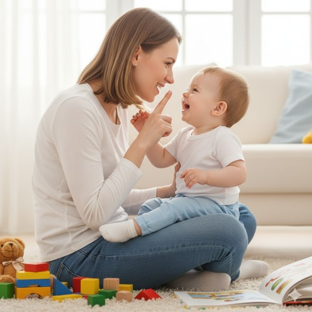

Daugelis tėvų nustemba sužinoję, kad skirtingo ir panašaus skambesio kalbos garsų suvokimas klausa, kuris itin sparčiai tobulėja trečiaisiais–ketvirtaisiais vaiko gyvenimo metais, o vėliau virsta akademiniais pasiekimais septintaisiais–devintaisiais metais, prasideda nuo paprasčiausio aplinkos garsų suvokimo.
👂 Svarbu atskirti: girdėti ir suvokti klausa – tai skirtingi dalykai!
Kūdikis garsą suvokia tada, kai ne tik jį girdi, bet ir nustato jo šaltinį:
- Pasuka galvą ar pasižiūri į tėvus, laukdamas reakcijos.
- Rodo pirštu į garso šaltinį.
- Bėga pažiūrėti, iš kur sklinda garsas, ir bando jį pakartoti.
Lavinimą galima pradėti labai anksti (nuo 4–5 mėn.), kai tik mažylis pradeda geriau orientuotis aplinkoje. Štai pirmieji žingsniai:
1️⃣ ŽINGSNIS: Ar garsas yra, ar jo nėra?
Mokykite vaiką pastebėti garsą žaisdami „daužymo žaidimą" ar belsdami į duris.
- Pauzė: Darykite iki 10 sek. pauzes, kad kūdikis „išgirstų tylą".
- Garsažodžiai: Kylančia intonacija skatinkite pakartoti: „Tuk tuk?", „Bam bam?".
- Vardas: Dainuokite vaiko vardą kasdienėse situacijose.
- Mėgdžiojimas: Taikykite metodą „aš mėgdžioju tave, tu mėgdžioji mane". Vėliau mokykite rodyti pirštu: „Kur bam bam? Va!".
- Dainelės ir "istorijos": „Kur au-au?", „Išdykęs katinėlis" (Katinėli miau, aš tave matau...).
2️⃣ ŽINGSNIS: Trukmė ir muzika
- Mokykite suvokti skirtumą tarp dainavimo ir kalbėjimo per judesį (šokį).
- Naudokite lėto ir greito tempo daineles.
- Įveskite garsus: „Ššš!" arba „Vvvvuuu!" (lėktuvas) ir kt.
- Atkartokite trukmę: tarkite balsius ilgai ir trumpai, pereikite prie skiemenų: maaa-mmaa, ba-ba, tarkite įvairia trukme ir intonacija.
3️⃣ ŽINGSNIS: Kasdienės frazės ir akustika
- Siekite žodžius su realiu veiksmu (pvz., „plaunam rankas").
- Tarkite skiemenis su skirtingais priebalsiais: ba, ma, na, va, ga ir cha, pa, ta.
- Mėgdžiokite bites, muses, paukščius, galite pridėti nesudėtingą pasikartojantį ritmą.
4️⃣ ŽINGSNIS: „Yra", „Nėra" ir „Dar"
Skleiskite garsą, sustokite ir klauskite: „Yra? Nėra! Dar?". Tam puikiai tinka transporto priemonių garsai ar „Autobuso dainelė".
💡 Šaltinis
Parengta pagal „SoundFoundations for Babies" (Cochlear™ ir Cheryl L. Dickson).
Tikiuosi, šie žingsniai bus naudingi auginantiems kūdikius. Kiekvienas „tuk-tuk" šiandien yra neabejotinas pagrindas sklandžiam skaitymui ateityje. 📚✨
„Girdėti ir suvokti klausa – tai skirtingi dalykai. Klausos suvokimas – tai pagrindas skaitymui ir rašymui."